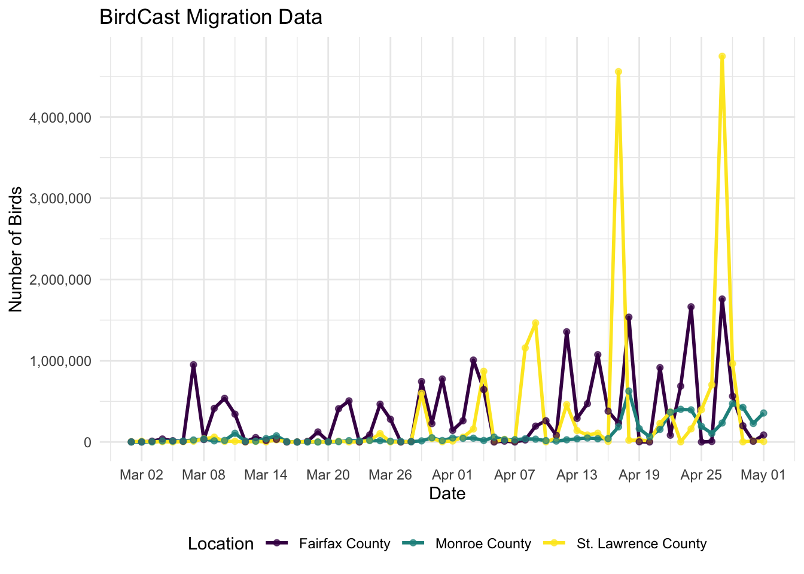
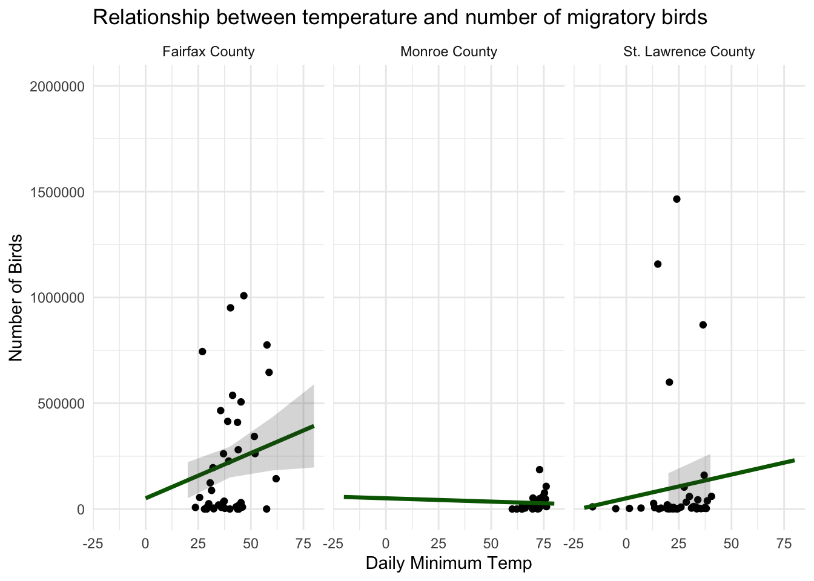
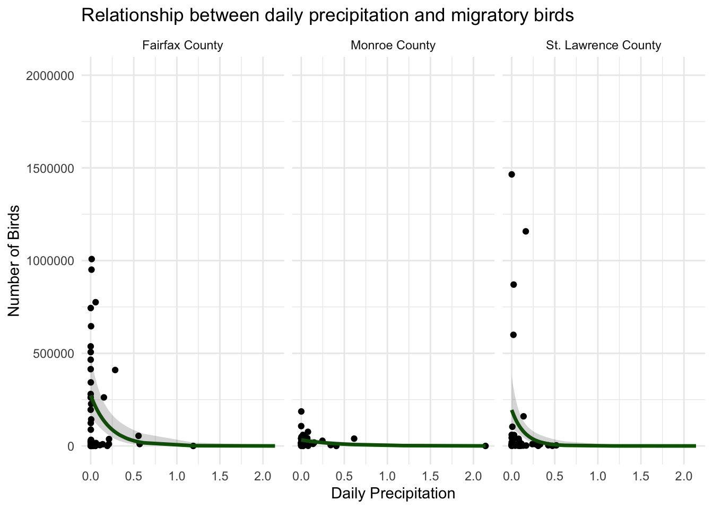

library(plotly)
library(tidyverse)
library(lubridate)
library(readr)
library(MASS)
library(ggeffects)
library(broom)
bird_cast_slc <- tibble(
date = c("05/01/2026", "04/30/2026", "04/29/2026", "04/28/2026", "04/27/2026", "04/26/2026", "04/25/2026", "04/24/2026", "04/23/2026", "04/22/2026", "04/21/2026", "04/20/2026", "04/19/2026", "04/18/2026", "04/17/2026", "04/16/2026", "04/15/2026", "04/14/2026", "04/13/2026", "04/12/2026", "04/11/2026", "04/10/2026", "04/09/2026", "04/08/2026", "04/07/2026", "04/06/2026", "04/05/2026", "04/04/2026", "04/03/2026", "04/02/2026", "04/01/2026", "03/31/2026", "03/30/2026", "03/29/2026", "03/28/2026", "03/27/2026", "03/26/2026", "03/25/2026", "03/24/2026", "03/23/2026", "03/22/2026", "03/21/2026", "03/20/2026", "03/19/2026", "03/18/2026", "03/17/2026", "03/16/2026", "03/15/2026", "03/14/2026", "03/13/2026", "03/12/2026", "03/11/2026", "03/10/2026", "03/09/2026", "03/08/2026", "03/07/2026", "03/06/2026", "03/05/2026", "03/04/2026", "03/03/2026", "03/02/2026",
"03/01/2026"),
birds = c(7100, 12800, 2200, 964600, 4747100, 703600, 397900, 161400, 2400, 369200, 228400, 15500, 23200, 21900, 4558100, 7900, 107800, 86300, 140800, 459900, 47400, 2600, 1465100, 1157700, 8900, 32500, 3200, 870600, 159800, 59000, 11900, 3600, 43600, 599500, 6700, 1400, 900, 103500, 19700, 1400, 1400, 9300, 1800, 1100, 4500, 600, 1800, 26600, 2100, 7300, 600, 8700, 7900, 59800, 38800, 9900, 4300, 700, 4300, 1700, 10300, 2900),
flight_speed = c(3, 14, NA, 38, 39, 19, 20, 19, 2, 24, 32, 6, 14, 32, 29, 9, 16, 17, 14, 50, 8, 7, 42, 44, 9, 10, 34, 67, 18, 53, 8, NA, 20, 40, 9, NA, 18, 28, 14, NA, NA, 10, NA, 23, 18, NA, 27, NA, NA, 31, 12, NA, NA, 19, 18, 15, 39, NA, NA, NA, 13, NA)
)
bird_cast_slc <- bird_cast_slc |>
mutate(date = mdy(date))
bird_cast_slc
bird_cast_fc <- tibble(
date = c("05/01/2026", "04/30/2026", "04/29/2026","04/28/2026", "04/27/2026", "04/26/2026", "04/25/2026", "04/24/2026", "04/23/2026", "04/22/2026", "04/21/2026", "04/20/2026", "04/19/2026", "04/18/2026", "04/17/2026", "04/16/2026", "04/15/2026", "04/14/2026", "04/13/2026", "04/12/2026", "04/11/2026", "04/10/2026", "04/09/2026", "04/08/2026","04/07/2026", "04/06/2026", "04/05/2026", "04/04/2026", "04/03/2026", "04/02/2026", "04/01/2026", "03/31/2026", "03/30/2026", "03/29/2026", "03/28/2026", "03/27/2026", "03/26/2026", "03/25/2026", "03/24/2026", "03/23/2026","03/22/2026", "03/21/2026","03/20/2026", "03/19/2026", "03/18/2026", "03/17/2026", "03/16/2026", "03/15/2026", "03/14/2026", "03/13/2026", "03/12/2026", "03/11/2026", "03/10/2026", "03/09/2026", "03/08/2026", "03/07/2026", "03/06/2026", "03/05/2026", "03/04/2026", "03/03/2026", "03/02/2026",
"03/01/2026"),
birds = c(86500, 8900, 199300, 563200, 1759500, 6600, 100, 1663700, 688000, 83700, 915400, 200, 2700, 1536300, 230800, 379900, 1074600, 471200, 290700, 1356700, 82300, 261300, 195300, 25100, 100, 10200, 100, 645900, 1008200, 261900, 143200, 775500, 227000, 744100, 4400, 0, 280100, 465300, 87900, 0, 506200, 409700, 7900, 123700, 7500, 0, 300, 32900, 19300, 54600, 3100, 342900, 537200, 414300, 30300, 951100, 9200, 15800, 37100, 10400, 0, 1100),
flight_speed = c(29, 17, 20, 24, 28, 14, NA, 31, 21, 25, 47, NA, NA, 34, 19, 25, 30, 22, 31, 52, 24, 36, 26, 25, NA, 17, NA, 49, 38, 51, 22, 51, 49, 53, 13, NA, 49, 45, 32, NA, 30, 41, 29, 36, NA, NA, 36, 48, 24, 38, 20, 57, 42, 31, 19, 49, 22, 34, 37, 28, NA, 25))
bird_cast_fc <- bird_cast_fc |>
mutate(date = mdy(date))
bird_cast_fc
bird_cast_mc <- tibble(
date = c("05/01/2026", "04/30/2026", "04/29/2026", "04/28/2026", "04/27/2026", "04/26/2026", "04/25/2026", "04/24/2026", "04/23/2026", "04/22/2026", "04/21/2026", "04/20/2026", "04/19/2026", "04/18/2026", "04/17/2026", "04/16/2026", "04/15/2026", "04/14/2026", "04/13/2026", "04/12/2026", "04/11/2026", "04/10/2026", "04/09/2026", "04/08/2026", "04/07/2026", "04/06/2026", "04/05/2026", "04/04/2026", "04/03/2026", "04/02/2026", "04/01/2026", "03/31/2026", "03/30/2026", "03/29/2026", "03/28/2026", "03/27/2026", "03/26/2026", "03/25/2026", "03/24/2026", "03/23/2026", "03/22/2026", "03/21/2026", "03/20/2026", "03/19/2026", "03/18/2026", "03/17/2026", "03/16/2026", "03/15/2026", "03/14/2026", "03/13/2026", "03/12/2026", "03/11/2026", "03/10/2026", "03/09/2026", "03/08/2026", "03/07/2026", "03/06/2026", "03/05/2026", "03/04/2026", "03/03/2026", "03/02/2026",
"03/01/2026"),
birds = c(356900, 228600, 425500, 472700, 233800, 105000, 192400, 395600, 402300, 366300, 155100, 64700, 164100, 626600, 186100, 41800, 40100, 48900, 38900, 27100, 11400, 16800, 35000, 39500, 28000, 27500, 59500, 18900, 47200, 45000, 49700, 18200, 51900, 13600, 3700, 6900, 9800, 16000, 19300, 13500, 17000, 4600, 700, 0, 0, 0, 4500, 76200, 42000, 10400, 11200, 107000, 19200, 14400, 36900, 24900, 11800, 11000, 12700, 1600, 700, 400),
flight_speed = c(27, 14, 23, 26, 22, 13, 20, 23, 20, 28, 22, 16, 15, 25, 26, 17, 15, 14, 20, 15, 18, 14, 23, 21, 3, 10, 15, 19, 24, 21, 20, 18, 20, 18, 7, 14, 18, 17, 11, 12, 12, 17, NA, NA, 9, 12, 19, 36, 9, 3, 8, 28, 12, 14, 18, 8, 17, 22, 18, 18, NA, NA))
bird_cast_mc <- bird_cast_mc |>
mutate(date = mdy(date))
bird_cast_mc
X4285590 <- read_csv("/Users/cecilyhansen/Downloads/stat334_blog/posts/blog-post-4/data/4285590.csv")
X4285610 <- read_csv("/Users/cecilyhansen/Downloads/stat334_blog/posts/blog-post-4/data/4285610.csv")
X4293024 <- read_csv("/Users/cecilyhansen/Downloads/stat334_blog/posts/blog-post-4/data/4293024.csv")Introduction
BirdCast is a subset of the Cornell Lab of Ornithology that uses Doppler weather radar to detect the number of migrating birds during the migration season to support bird conservation and expand knowledge of migratory bird movement. Doppler tracking for bird migration is active from March 1 to June 15 and August 1 to November 15; I am specifically looking at March 1, 2026 to May 1, 2026. This time of year is crucial for migrating species as they return to their summer breeding grounds. I am currently taking an ornithology course which really sparked my interest in the massive and metabolically intense journey migratory birds take on. Birds are truly endurance athletes, sometimes flying thousands of miles without stopping, operating at 10x their resting metabolic rate. Throughout this project and my ornithology course, I gained an understanding of how important and fascinating bird migration really is.
I scraped data from BirdCast on the number of birds per night, how fast they were flying on average, and what species of birds are likely to be flying on a given night. I am focusing on three different counties on the East Coast - 1 in New York, 1 in Virginia, and 1 in Florida. I also scraped data from NOAA to compare bird migration to weather variables.
| Variable | Description |
|---|---|
date |
Organized by month, day, year. |
birds |
Number of birds flying on a given night. |
flight_speed |
Average speed the birds were flying on a given night (in mph). |
location |
St. Lawrence County (NY), Fairfax County (VA), or Monroe County (FL). |
tmin |
Daily minimum temperature (in Fahrenheit) |
prcp |
Rainfall (in inches) |
Over the course of this project, I was interested in representing what nightly bird migration looked like in different locations using interactivity. I also explored how weather variables like precipitation and temperature impact bird migration using linear and negative binomial regressions.
Data Import
Data Cleaning
## St. Lawrence County
weather_slc <- X4285590 |>
dplyr::select(NAME, DATE, PRCP, TMAX, TMIN, TAVG, SNOW) |>
mutate(DATE = ymd(DATE)) |>
group_by(DATE) |>
summarise(
prcp = mean(PRCP, na.rm = TRUE),
tmax = mean(TMAX, na.rm = TRUE),
tmin = mean(TMIN, na.rm = TRUE),
tavg = mean(TAVG, na.rm = TRUE),
snow = mean(SNOW, na.rm = TRUE),
.groups = "drop"
) |>
mutate(location = "St. Lawrence County")
## Fairfax County
weather_fc <- X4285610 |>
dplyr::select(STATION, DATE, PRCP, TMAX, TMIN, TAVG, SNOW) |>
mutate(DATE = ymd(DATE)) |>
group_by(DATE) |>
summarise(
prcp = mean(PRCP, na.rm = TRUE),
tmax = mean(TMAX, na.rm = TRUE),
tmin = mean(TMIN, na.rm = TRUE),
tavg = mean(TAVG, na.rm = TRUE),
snow = mean(SNOW, na.rm = TRUE),
.groups = "drop"
) |>
mutate(location = "Fairfax County")
## Monroe County
weather_mc <- X4293024 |>
dplyr::select(STATION, DATE, PRCP, TMAX, TMIN, TAVG, SNOW) |>
mutate(DATE = ymd(DATE)) |>
group_by(DATE) |>
summarise(
prcp = mean(PRCP, na.rm = TRUE),
tmax = mean(TMAX, na.rm = TRUE),
tmin = mean(TMIN, na.rm = TRUE),
tavg = mean(TAVG, na.rm = TRUE),
snow = mean(SNOW, na.rm = TRUE),
.groups = "drop"
) |>
mutate(location = "Monroe County")
bird_cast_all <- bind_rows(
bird_cast_slc |> mutate(location = "St. Lawrence County"),
bird_cast_fc |> mutate(location = "Fairfax County"),
bird_cast_mc |> mutate(location = "Monroe County")
) |>
arrange(date)
weather_combined <- bind_rows(weather_slc, weather_fc, weather_mc)
bird_weather <- bird_cast_all |>
left_join(weather_combined, by = c("date" = "DATE", "location" = "location"))
bird_weather# A tibble: 186 × 9
date birds flight_speed location prcp tmax tmin tavg snow
<date> <dbl> <dbl> <chr> <dbl> <dbl> <dbl> <dbl> <dbl>
1 2026-03-01 2900 NA St. Lawrence … 0.02 26.5 1.5 NaN 0.2
2 2026-03-01 1100 25 Fairfax County 0 58.3 32.3 46 0
3 2026-03-01 400 NA Monroe County 0.0005 82.5 69.7 NaN 0
4 2026-03-02 10300 13 St. Lawrence … 0 21 -16 NaN 0
5 2026-03-02 0 NA Fairfax County 0.00263 46 28 36 0.0211
6 2026-03-02 700 NA Monroe County 0.08 82.3 72 NaN 0
7 2026-03-03 1700 NA St. Lawrence … 0 40 -5 NaN 0
8 2026-03-03 10400 28 Fairfax County 0.211 38.3 29.3 35 0.842
9 2026-03-03 1600 18 Monroe County 0.0005 83 72.6 77 0
10 2026-03-04 4300 NA St. Lawrence … 0 44 31 NaN 0
# ℹ 176 more rowsPrimary Visualizations
Visualization 1
ggplot(data = bird_cast_all, aes(x = date, y = birds, color = location)) +
geom_line(linewidth = 1) +
geom_point(size = 1.5, alpha = 0.7) +
scale_y_continuous(labels = scales::comma) +
scale_x_date(date_breaks = "6 days", date_labels = "%b %d") +
theme_minimal() +
scale_color_viridis_d() +
labs(title = "BirdCast Migration Data", y = "Number of Birds", x = "Date", color = "Location") +
theme(legend.position = "bottom")
This plot shows a side-by-side comparison of all three counties. It highlights that up until mid-April, Fairfax County and St. Lawrence County had relatively similar numbers of nighttime migrants. However, St. Lawrence County began to see much higher numbers due to the two large spikes of migration during especially nice spring weather. Alternatively, Monroe County consistently has much lower migration numbers than the other two counties. Southern Florida has stabler weather in the spring, which could be the reason there aren’t significant ‘peak’ nights where the number of migratory birds is very high. The data collection period only runs through May 1st, but the migratory season will continue for several more weeks. It would be interesting to see if Fairfax County and Monroe County begin to have higher spikes later on in the season.
Visualization 2
mod <- lm(birds ~ tmin + tmin:location, data = bird_weather)
mod |> tidy()# A tibble: 4 × 5
term estimate std.error statistic p.value
<chr> <dbl> <dbl> <dbl> <dbl>
1 (Intercept) 50671. 74460. 0.681 0.497
2 tmin 4277. 1991. 2.15 0.0336
3 tmin:locationMonroe County -4591. 1264. -3.63 0.000408
4 tmin:locationSt. Lawrence County -2031. 1805. -1.13 0.263 pred <- ggpredict(mod, terms = c("tmin", "location")) |>
as.data.frame(terms_to_colnames = TRUE) |>
as_tibble()
ggplot(data = bird_weather, aes(x = tmin, y = birds)) +
geom_point() +
geom_line(data = pred, aes(x = tmin, y = predicted), color = "darkgreen", linewidth = 1.2) +
geom_ribbon(data = pred, aes(y = predicted,
ymin = conf.low,
ymax = conf.high),
alpha = 0.2) +
ylim(0, 2000000) +
theme_minimal() +
facet_wrap(~location) +
labs(title = "Relationship between temperature and number of migratory birds", x = "Daily Minimum Temp", y = "Number of Birds")
The plot below shows that in Fairfax County and St. Lawrence County, the number of nighttime migrants is positively correlated with the daily minimum temperature. I utilized the daily minimum temperature for this analysis rather than daily average because the birds are migrating at night when temperature is at its lowest. The plot indicates that more birds migrate when nighttime temperature is higher. In contrast, there is very little correlation between temperature and migratory birds in Monroe County, likely because Florida has milder weather and less temperature variation, as evidenced by the data points being clustered between 50\(\textdegree\) and 75\(\textdegree\) Fahrenheit. In St. Lawrence County there is much more variation between temperatures, with a low of -25\(\textdegree\) F. Nights where temperatures were below 0\(\textdegree\) F had much fewer migratory birds. Finally, Fairfax County had a steeper slope, which indicates that more birds migrate when its warmer in this area. There is much more variation around the confidence ribbons, which means this pattern may not always be true. This plot matches my prior assumptions that the number of migratory birds increases when temperature increases. When temperature is consistent, the number of birds does not drastically change.
Visualization 3
mod_nb <- glm.nb(birds ~ prcp * location, data = bird_weather)
mod_nb |> tidy()# A tibble: 6 × 5
term estimate std.error statistic p.value
<chr> <dbl> <dbl> <dbl> <dbl>
1 (Intercept) 12.5 0.295 42.5 0
2 prcp -4.54 1.24 -3.67 0.000245
3 locationMonroe County -2.13 0.394 -5.42 0.0000000607
4 locationSt. Lawrence County -0.340 0.449 -0.758 0.448
5 prcp:locationMonroe County 2.14 1.46 1.46 0.144
6 prcp:locationSt. Lawrence County -2.15 2.34 -0.918 0.358 pred_nb <- ggpredict(mod_nb, terms = c("prcp [all]", "location")) |>
as.data.frame() |>
as_tibble() |>
rename(location = group)
ggplot(data = bird_weather, aes(x = prcp, y = birds)) +
geom_point() +
geom_line(data = pred_nb, aes(x = x, y = predicted),
color = "darkgreen", linewidth = 1.2) +
geom_ribbon(data = pred_nb, aes(x = x, y = predicted,
ymin = conf.low, ymax = conf.high),
alpha = 0.2) +
ylim(0, 2000000) +
theme_minimal() +
facet_wrap(~location) +
labs(title = "Relationship between daily precipitation and migratory birds",
x = "Daily Precipitation", y = "Number of Birds")
This plot shows a clear decrease in migration when precipitation is occurring in all three counties. Active migration nights only occurred when precipitation was 0. The number of birds flying was very low when there was more than 0.5 inches of precipitation. Monroe County had the least steep slope because it had lower numbers of bird migration overall; however, it still highlights the trend of more precipitation resulting in less birds per night.
Conclusion
Final Analysis
In each county, the number of migrating birds was different, with St. Lawrence having some nights with over 4 million birds and Monroe only having peaks of around 700,000. Fairfax County showed much more night-to-night variation than the other counties. The project also included an analysis of how weather patterns impact nighttime migration through linear and negative binomial regressions. It was found that temperature is positively associated with the number of migrating birds, meaning more birds migrate when the weather is warmer. Alternatively, precipitation is negatively associated with the number of migrating birds, meaning birds are less likely to migrate when precipitation is high.
Potential Drawbacks
The data collection period is relatively short as it only goes through the first two months of the migratory season. If I had more time to collect data for this project, I would want to include the entire season through June 15th. It would also be interesting to compare this data to the fall migration season. It’s possible that there would be more birds coming through in the fall because of the new juveniles added to the population. Finally, it also would have been interesting to compare the spring migration numbers from 2026 to historic data.